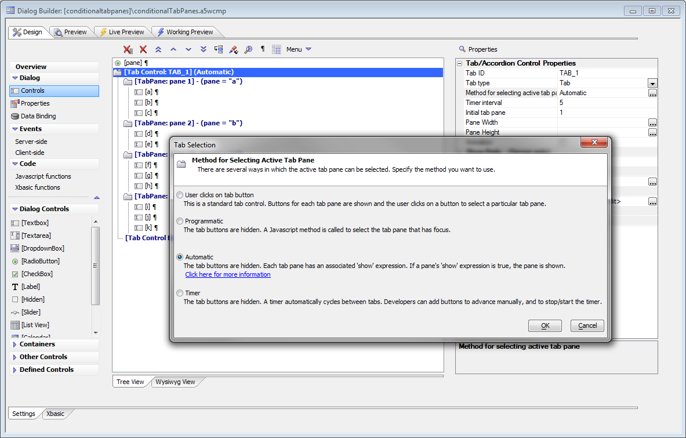
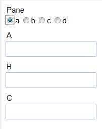
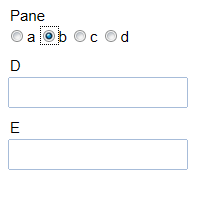
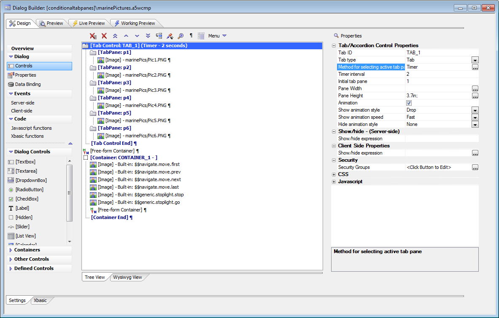
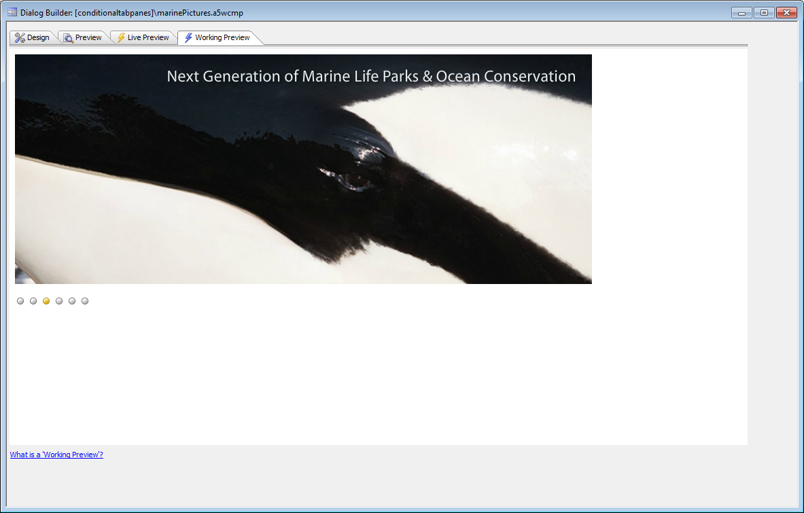

Dialog Component - Advanced Tab Control
Requires the Dialog Component - Advanced Tab Control feature pack, included in subscriptionOverview
The standard Tab control object in the Dialog allows you to group Dialog controls into a series of 'panes'. When the Dialog is run, the user clicks on a tab button to show the corresponding tab pane. However, clicking on a tab button is not the only way in which you might want to change the active pane. With this Feature Pack other methods for selecting the active pane are exposed.The various ways in which the active tab pane can be selected are:
- User clicks a tab button
- Programmatic - some Javascript code is executed
- Automatic - a client-side 'watch' expression determines which tab pane is active
- Timer - a timer automatically cycles between the tab panes
Setup for automatic panes select by radio buttons

Tab panes selected automatically by radio buttons
|  |  |
Watch Video - Part 1
Setup for timed tab panes

Timed tab panes

Watch Video - Part 2
Download Components Used in Video
Timer feature deep dive
This video shows how the timer feature that automatically cycles between a series of images was implemented. This includes discussing the Advanced Tab Control APIs.Watch Video - Part 1
Watch Video - Part 2
Watch Video - Part 3
Watch Video - Part 4